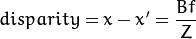

In last session, we saw basic concepts like epipolar constraints and other related terms. We also saw that if we have two images of same scene, we can get depth information from that in an intuitive way. Below is an image and some simple mathematical formulas which proves that intuition. (Image Courtesy :
The above diagram contains equivalent triangles. Writing their equivalent equations will yield us following result:

 and
and  are the distance between points in image plane corresponding to the scene point 3D and their camera center.
are the distance between points in image plane corresponding to the scene point 3D and their camera center.  is the distance between two cameras (which we know) and
is the distance between two cameras (which we know) and  is the focal length of camera (already known). So in short, above equation says that the depth of a point in a scene is inversely proportional to the difference in distance of corresponding image points and their camera centers. So with this information, we can derive the depth of all pixels in an image.
is the focal length of camera (already known). So in short, above equation says that the depth of a point in a scene is inversely proportional to the difference in distance of corresponding image points and their camera centers. So with this information, we can derive the depth of all pixels in an image.
So it finds corresponding matches between two images. We have already seen how epiline constraint make this operation faster and accurate. Once it finds matches, it finds the disparity. Let’s see how we can do it with OpenCV.
Below code snippet shows a simple procedure to create disparity map.
import numpy as np
import cv2
from matplotlib import pyplot as plt
imgL = cv2.imread('tsukuba_l.png',0)
imgR = cv2.imread('tsukuba_r.png',0)
stereo = cv2.createStereoBM(numDisparities=16, blockSize=15)
disparity = stereo.compute(imgL,imgR)
plt.imshow(disparity,'gray')
plt.show()
Below image contains the original image (left) and its disparity map (right). As you can see, result is contaminated with high degree of noise. By adjusting the values of numDisparities and blockSize, you can get a better result.
Note
More details to be added